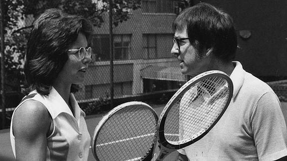
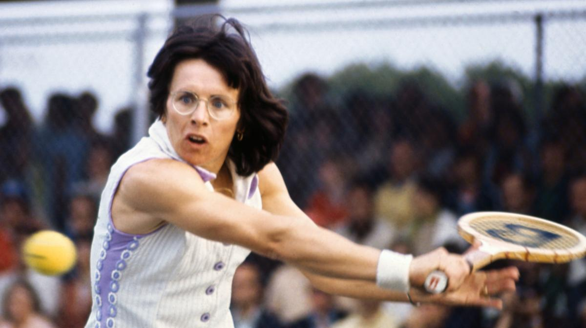

Inicio
Partidos

El legendario partido de tenis entre Billie Jean King y Bobby Riggs por LGI31 octubre, 2017No hay comentarios Comparte en RRSS 1 SHARES Compartir en Facebook 1 Compartir en Twitter ‘LA BATALLA DE LOS SEXOS’ / Los creadores de Pequeña Miss Sunshine llevan al cine el legendario partido de tenis entre Billie Jean King y Bobby Riggs, un enfrentamiento que reflejaba una batalla mucho mayor. www.cinesrenoir.com En 1973 se celebró un partido de tenis único en la historia de este deporte, el que enfrentó a la campeona mundial femenina Billie Jean King y al ex campeón masculino Bobby Riggs. El acontecimiento, fuera de cualquier campeonato deportivo, se convirtió en espejo de la rivalidad entre sexos que sufría el mundo, hasta el punto de que se le llamó ‘la batalla de los sexos’.
Su imponente carrera llega acompañada de uno de los momentos más conocidos dentro de la historia del deporte y que han marcado un importante punto de inflexión en la lucha por la igualdad. Fue en 1973 cuando la jugadora fue retada a competir contra Bobby Riggs, campeón masculino del mundo en los años 1941, 1946 y 1947. Este reto fue conocido como la “Batalla de los Sexos”, en el que el jugador buscaba demostrar la superioridad del hombre sobre la mujer. ¿El resultado? Una gran victoria que anotar para Billie Jean King. Pero 1973 no se resume en la historia de esta jugadora con un simple reto, sino que en ese mismo año amenazó con boicotear el Open de los Estados Unidos, uno de los torneos más importantes del calendario, con un objetivo: conseguir que las mujeres recibieran un premio económico igual al de los hombres. Billie Jean consiguió con su presión ser escuchada y, gracias a ello, este torneo se convirtió en el primero en ofrecer igualdad en las retribuciones. Su carrera en el tenis no es lo único por lo que se recordará a Billie Jean King, ya que sigue siendo una importante figura en la lucha por la igualdad muchos años después. Junto con su dilatada carrera en el deporte, ha liderado la creación de la Women’s Tennis Asociation y la World Team Tennis League, lo que la ha convertido en la primera mujer en desempeñarse como comisionada en el deporte profesional. Incluso el expresidente Barack Obama se refirió a ella, indicando que no se limitó en su lucha dentro del deporte, sino que también ha participado en todos los ámbitos de la vida pública. Por todas y cada una de estas razones, se ha convertido en una de las primeras y más importantes figuras femeninas del deporte en los Estados Unidos y todo un ejemplo para nuevas generaciones.
